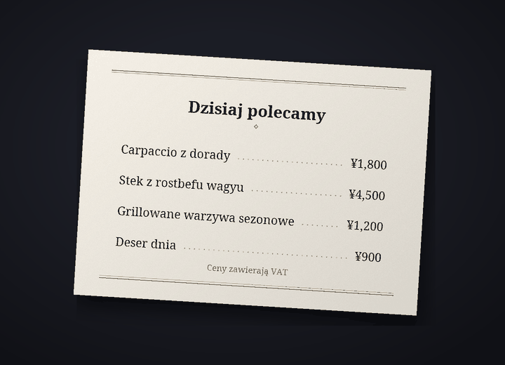

Bot do tłumaczenia czatu na Discordzie
Na Discordzie każdy rozmawia w swoim języku
Cozirom to bot na Discorda, który tłumaczy czat na język rozmówcy. Gdy go włączysz, twoje wiadomości będą publikowane w tłumaczeniu pod twoją własną nazwą i z twoim zdjęciem profilowym, a tekst na obrazach też zostanie przetłumaczony.
Tłumaczenia wykonuje AI (Claude od Anthropic). Może się mylić, więc w ważnych sprawach sprawdź też oryginał.
Co potrafi bot
Jeden bot tłumaczy tekst, obrazy i głos
Limity planów liczone są w tłumaczeniach. Jedna wiadomość przetłumaczona na jeden język to 1 tłumaczenie.
6 funkcji
Ile tłumaczeń
Automatyczne tłumaczenie
Wystarczy raz wpisać
/tlumacz wlacz, a twoje wiadomości na tym serwerze będą publikowane w języku rozmówcy, pod twoją nazwą i z twoim zdjęciem profilowym. Oryginał zostaje pod tłumaczeniem małą czcionką, a przycisk pokazuje cały oryginał.
pokazuje cały oryginał.Tłumaczenia1 za wiadomość
Tekst na obrazach
Menu, ekrany gier, memy: jeśli na obrazie jest tekst, zostanie odczytany i przetłumaczony. Wynik otworzysz ikoną
 pod obrazami osób z włączonym tłumaczeniem albo przez tłumaczenie prawym przyciskiem. Widzi go tylko osoba, która o niego poprosiła, a obrazy bez tekstu nie są liczone.
pod obrazami osób z włączonym tłumaczeniem albo przez tłumaczenie prawym przyciskiem. Widzi go tylko osoba, która o niego poprosiła, a obrazy bez tekstu nie są liczone.TłumaczeniaZwykle około 9 za obraz
Tłumaczenie na obrazie
Ikoną
 dostajesz kopię obrazu, na której oryginalny tekst jest usunięty, a w jego miejscu wpisane jest tłumaczenie. Na początku wybrana jest opcja „Jak w oryginale”, czyli czcionka zbliżona do oryginalnych liter, a bez zużywania tłumaczeń możesz wybierać spośród maksymalnie 10 zestawów czcionek, takich jak „Szeryfowa”, „Odręczna” i „Komiksowa”. Najlepiej działa to z poziomym tekstem, na przykład na zrzutach ekranu, memach, ekranach gier i w menu, a wynik widzi tylko osoba, która nacisnęła.
dostajesz kopię obrazu, na której oryginalny tekst jest usunięty, a w jego miejscu wpisane jest tłumaczenie. Na początku wybrana jest opcja „Jak w oryginale”, czyli czcionka zbliżona do oryginalnych liter, a bez zużywania tłumaczeń możesz wybierać spośród maksymalnie 10 zestawów czcionek, takich jak „Szeryfowa”, „Odręczna” i „Komiksowa”. Najlepiej działa to z poziomym tekstem, na przykład na zrzutach ekranu, memach, ekranach gier i w menu, a wynik widzi tylko osoba, która nacisnęła.TłumaczeniaZwykle około 19 za obraz


Przykład: oryginalne zdjęcie (japońska karta menu) i to samo zdjęcie z usuniętym tekstem oraz polskim tłumaczeniem wpisanym w jego miejscu czcionką „Szeryfowa”. Wiadomości głosowe
Kliknij prawym przyciskiem wiadomość głosową wysłaną z aplikacji na telefon, a dostaniesz zapis tego, co zostało powiedziane, i jego tłumaczenie. Na tekst zamieniane są wiadomości do 3 minut, a wiadomości bez mowy nie są liczone.
Tłumaczenia1 za sekundę plus tłumaczenie10-sekundowa wiadomość to zwykle 11
Cztery tony
Slang, swobodny, przyjazny lub formalny: ton wybierasz dla każdego serwera. Na ty z przyjaciółmi, per pan/pani w nowym miejscu. W planie Guest (darmowym) przez pierwsze 14 dni masz wszystkie cztery, a potem ton przyjazny.
TłumaczeniaPłatne: wszystkie cztery. Free: pierwsze 14 dni
31 języków
Tłumaczenie obsługuje 31 języków. Ekrany bota i nazwy komend są dostępne w 30 językach Discorda, więc rozmówca ustawia wszystko w swoim języku.
Tłumaczenia31 do tłumaczenia, 30 w interfejsie

Jak zacząć
Trzy kroki do przetłumaczonych wiadomości pod twoją nazwą
Dodaj bota do serwera
Administrator serwera dodaje bota do serwera. O link z zaproszeniem zapytaj w kanałach serwera pomocy technicznej.
Włącz tłumaczenie
Każdy, kto chce, żeby jego wiadomości były tłumaczone, wpisuje
/tlumacz wlaczna tym serwerze. Bot zgadnie twój język i język rozmówcy, a potem otworzy panel ustawień. Jeśli coś źle zgadł, zmień to w rozwijanych menu.Pisz jak zwykle
Pisz jak zwykle, a tłumaczenie pojawi się pod twoją nazwą. Zacznij od planu Guest (darmowego), a gdy będziesz potrzebować więcej, zmień plan na stronie planów.
Prywatność
Wiadomości do tłumaczenia i obrazy trafiają tylko do Anthropic (USA), a dźwięk wiadomości głosowych tylko do Google (USA). Bot przechowuje oryginał opublikowanego tłumaczenia przez 14 dni, a pamięć podręczną tłumaczeń przez 30 dni, i nie zapisuje obrazów, dźwięku ani odczytanego z nich tekstu. Treść czatów nigdy nie trafia do logów, a komenda /tlumacz usun-moje-dane w każdej chwili usuwa twoje dane.